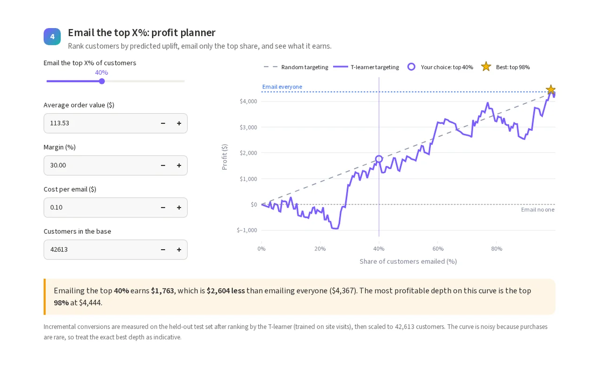
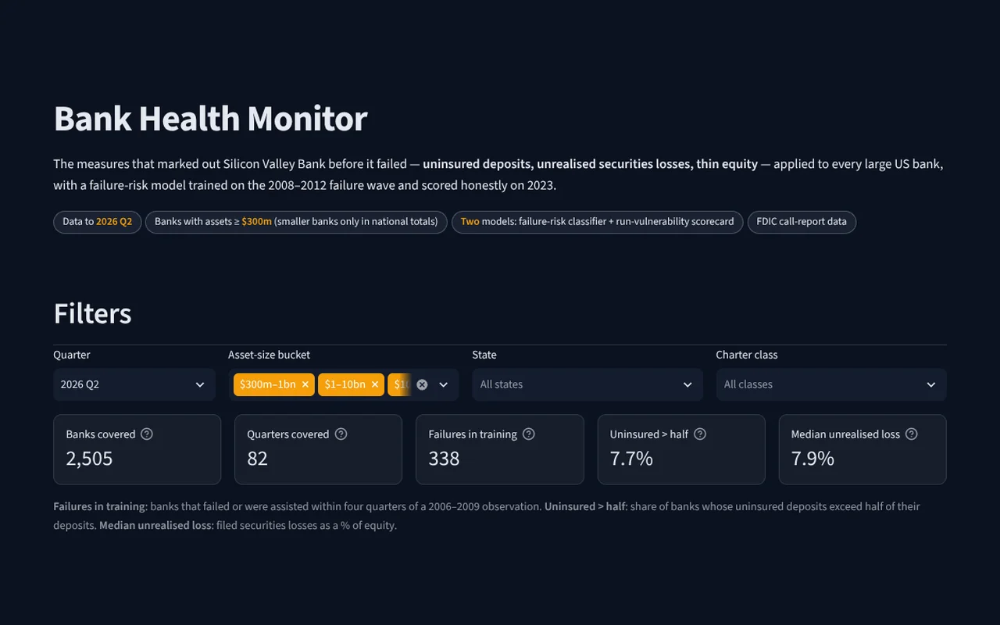
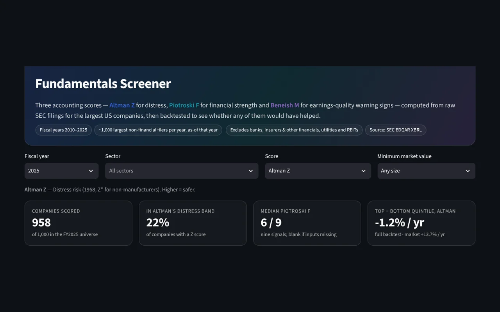
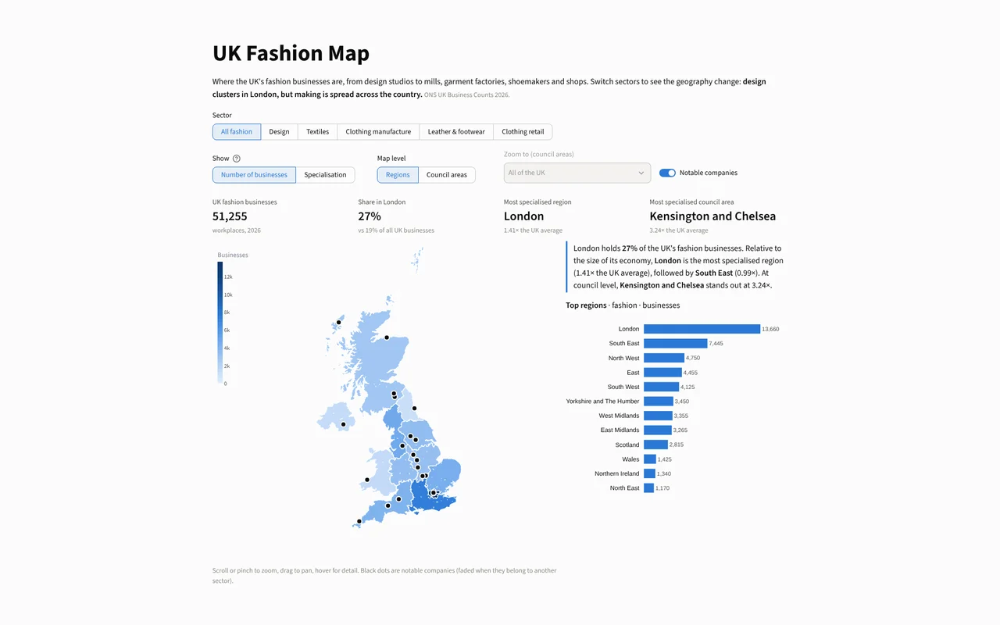
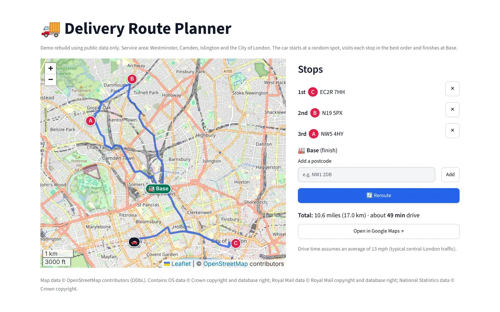

Attribution Lab LIVE
Same conversions, seven attribution models: which channels really earned the sale?
Score each model against a simulated ground truth and see how much budget moves depending on the model you pick.
Open the live dashboard ↗A selection of working dashboards built on public and simulated data. Each one answers a real business question, and you can open it and try it yourself.
Dashboards open in a new tab. If one has been idle, it may take up to 30 seconds to wake up.
Which channels, customers and campaigns actually earn their budget.
Same conversions, seven attribution models: which channels really earned the sale?
Score each model against a simulated ground truth and see how much budget moves depending on the model you pick.
Open the live dashboard ↗
How much revenue each channel really drives, and where more spend stops paying, from a Bayesian model on simulated data.
Compare spend with contribution, read each channel’s saturation curve and test a new budget split.
Open the live dashboard ↗
Which customers does a marketing email actually persuade?
Compare two uplift models on a real randomised email test and choose how many customers to target for the most profit.
Open the live dashboard ↗Risk, valuation and market signals built from public financial data.

The warning signs behind Silicon Valley Bank’s collapse, applied to every large US bank.
Rank banks on run vulnerability, see how a failure-risk model scored the 2023 failures, and drill into any bank’s filings.
Open the live dashboard ↗
Three classic accounting scores, computed from raw SEC filings for the largest US companies.
Screen and sort companies, see the line items behind any score, and check whether each score would have paid off.
Open the live dashboard ↗
UK and US government yield curves, fitted month by month and forecast ahead.
Watch four decades of curves move, compare forecasts with what happened, and see how a curve shift changes a bond’s price.
Open the live dashboard ↗Maps, places and routes: where things are, and how to get there.

Where the UK’s fashion businesses are, from design studios to mills, factories, shoemakers and shops.
Switch sectors, compare regions and council areas, and look up how specialised any place is.
Open the live dashboard ↗
The shortest route for a driver’s stops across central London, drawn on real roads.
Add postcodes, reroute, and see the best visiting order and drive time on the map.
Open the live dashboard ↗Tell us the decision you need to make. We'll tell you honestly what the data can and can't answer.
contact@innditech.com →